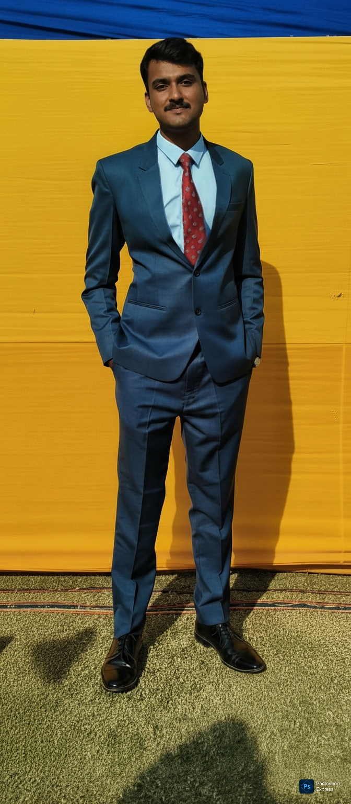

ABOUT / PARIMAL MISHRA
PARIMAL
MISHRA.

Computer Science undergraduate at ABES Engineering College, Ghaziabad, building toward backend engineering and AI/ML. My work sits at the intersection of Python, data, practical software systems and an interest in solving problems beyond the screen.
I also take responsibility outside code — leading events at Trishul, working with student teams, and contributing to literary and campus initiatives.
EMAIL
parimalmishrawork@gmail.comBASED IN
INDIAGITHUB
Parimal-Mishra
parimalmishrawork@gmail.comBASED IN
INDIAGITHUB
Parimal-Mishra
FOCUS
Backend Development
Artificial Intelligence / Machine Learning
LEADERSHIP
Trishul · Head of Events
GENERO'26 · Literary Coordinator
EDUCATION
ABES Engineering College
B.Tech CSE · 2024—2028